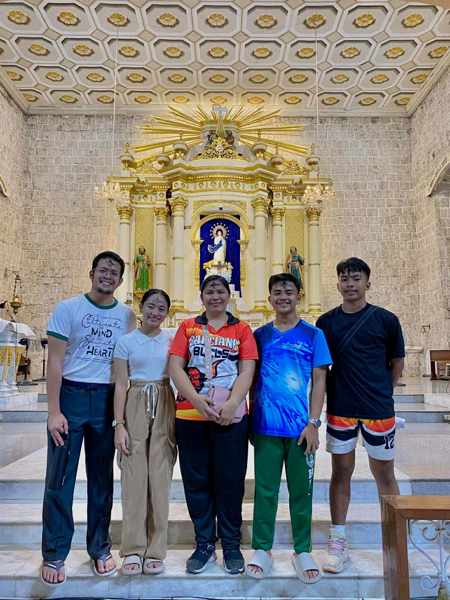
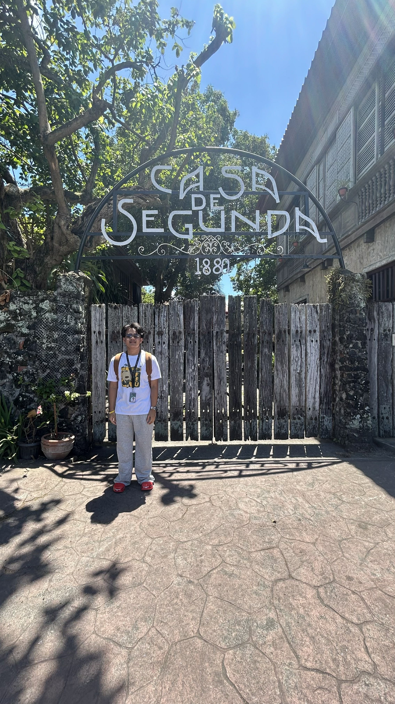
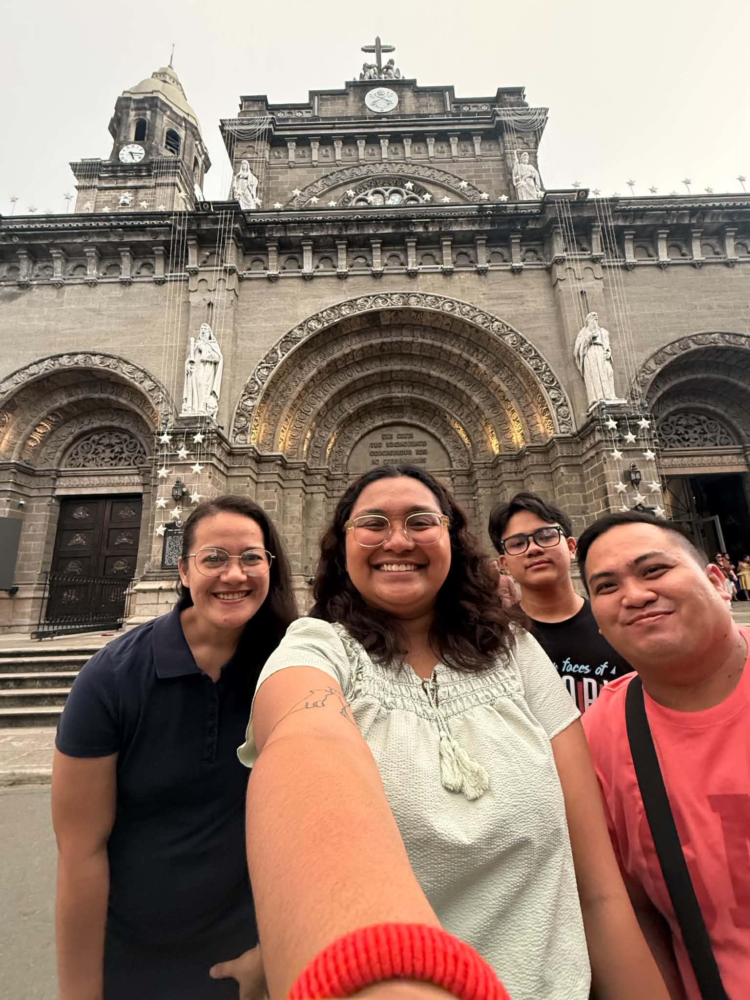
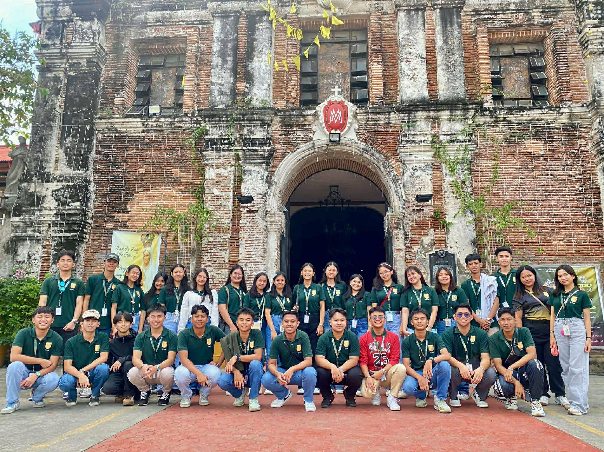
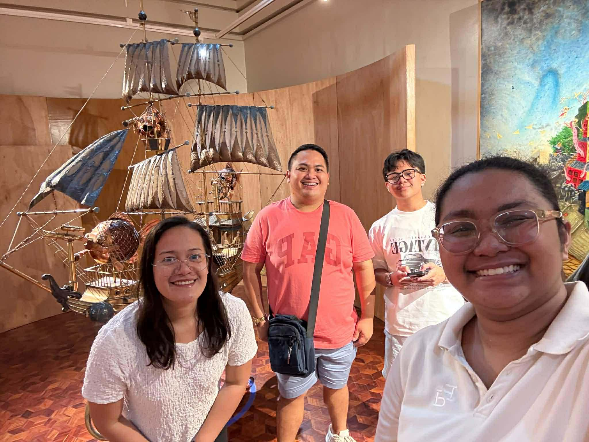

The Archdiocesan Shrine of Saint Joseph the Patriarch
is a historical Catholic church dedicated to Saint Joseph, the patron saint of workers and families. it is considered a historical place because it dates back to the Spanish colonial period and reflects the strong influence of Catholicism in the Philippines. it has been an important center of faith and community life in San Jose for many years, making it a significant cultural and religious landmark.

The Galleria Taal
is a heritage museum inside an old ancestral house in taal, Batangas. it is considered a historical place because it preserves Spanish era architecture and displays antiques, old photos, and artifacts that show how filipinos lived in the past. it helps keep Taal's culture and history alive for future generations.

The Marcela Agoncillo Monument
Honors Marcela Agoncillo, who is known as the "Mother of the Phillippine Flag." it is considered a historical a historical place because she played a key role in making the first official Phillpine flag during the Spanish period, which became a symbol of independence. The monument helps preserve her legact and reminds Filipino of her contribution to the country's history.

The Taal Basilica
is one of the largest Catholic churches in Asia, dedicated to Saint Martin of Tours. it is considered a historical place because it was built during the Spanish colonial period and has been rebuilt several times due to earthquakes and volcanic activity. its size, architecture, and long history make it an important symbol of faith And heritage in the Philippines.

The Goco Ancestral House
Is a preserved heritage house in Lipa that reflects the lifestyle of a wealthy Filipino family during the Spanish and American Colonial periods. it is considered a historical place because it showcases original architecture, furniture, and design from the past, helping people understand how families lived in old Lipa. it also represents the city's rich cultural and ancestral heritage.

The National Shrine of Saint Gerard Majella
Commonly known as the Redemptorist Church in Lipa, is a well known Catholic church run by the Redemptorist. it is considered a historical and religious place because it has long been a center of devotion and pilgrimage, especially for Saint Gerard Majella, the patron of mothers and families. Over the years, it has played an important role in the spiritual life of the community, making it a significant landmark in Lipa.

The Casa de Segunda
is a preserved ancestral house in Lipa that once belonged to Segunda Katigbak, known as the first love of Jose Rizal. it is considered a historical place because it is connected to Rizal's life and gives a glimpse of Filipino lifestyle during the spanish period. The house has been maintained to preserve its original dessign, making it an important cultural and historical landmark in Lipa.

The Museo de Lipa
is a local museum that showcases the history, culture, and heritage of Lipa City. it is considered a historical place because it preserves important artifacts, photos, and stories from the Spanish period up to modern times. The museum helps people understand how Lipa developed, especially its past as a wealthy coffee producing city, making it an important cultural landmark in the Philippines.

The San Sebastian Cathedral
it is also know as the Metropolitan Cathedral of Saint Sebastian, is a major catholic church in Lipa aand the center of the Archdiocese of Lipa. it is considered a historical place because it dates back to the spanish colonial period, showing the strong influence of Catholicism in the Philippines. it has witnessed important events in the growth of Lipa and has been rebuilt over time, symbolizing the resilience and faith of the local community.

The Archdiocesan Shrine of Our lady of Caysasay
is a historic Catholic shrine dedicated to the Virgin Mary under the title Our lady of Caysasay. it is considered a historical place because it is linked to one of the Oldest Marian devotions in the Philippines, dating back to the Spanish colonial period. Many miracles and religious events are associated with it, making it an important pilgrimage site and a strong symbol of faith and history in Batangas.